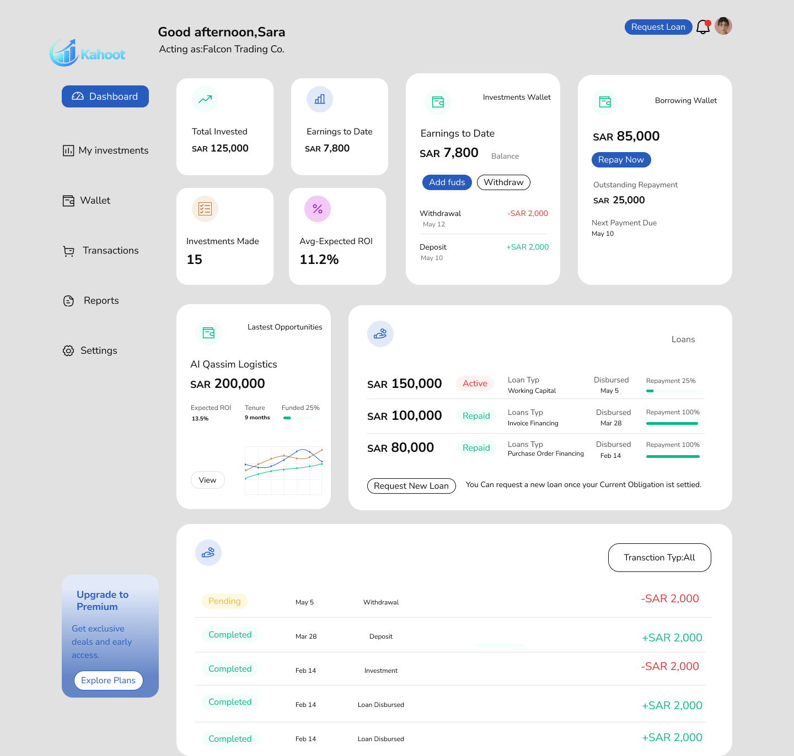
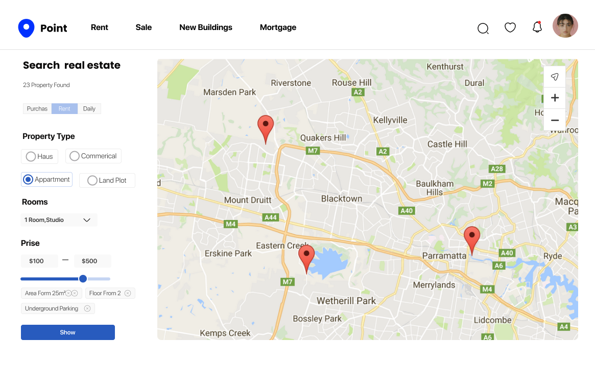
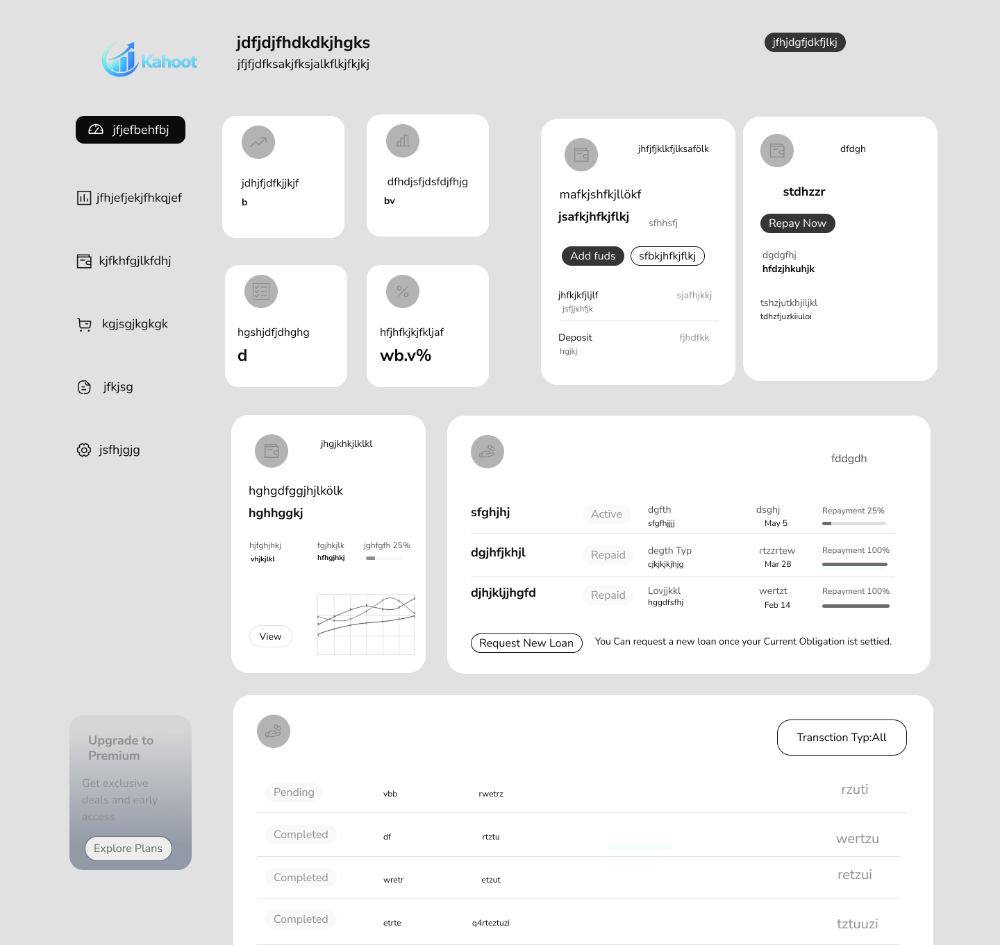
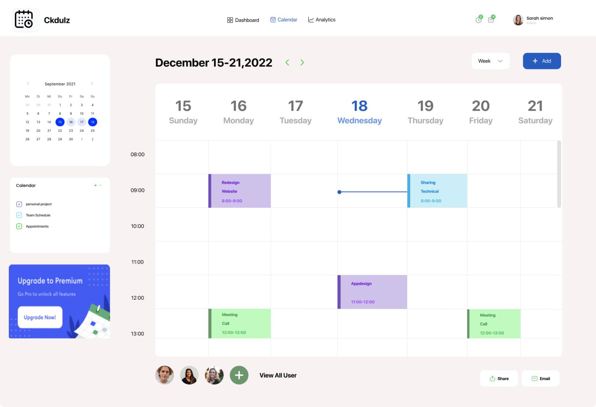

Dashboard
A clean dashboard concept focused on clarity, quick actions, and readable data hierarchy. The case study includes user story, wireframes, and final UI screens.




A clean dashboard concept focused on clarity, quick actions, and readable data hierarchy. The case study includes user story, wireframes, and final UI screens.



